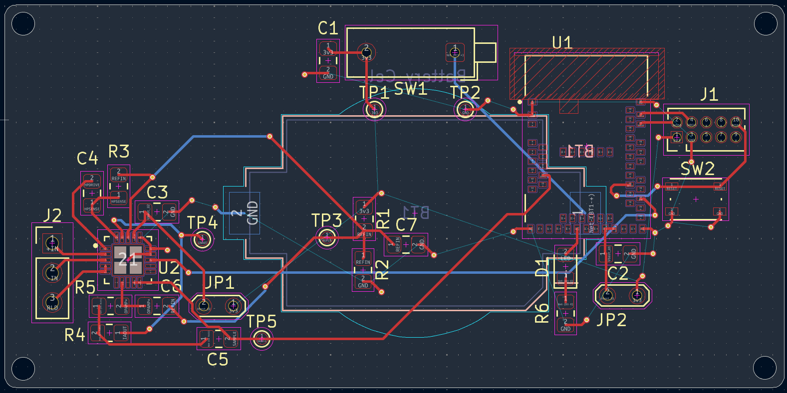
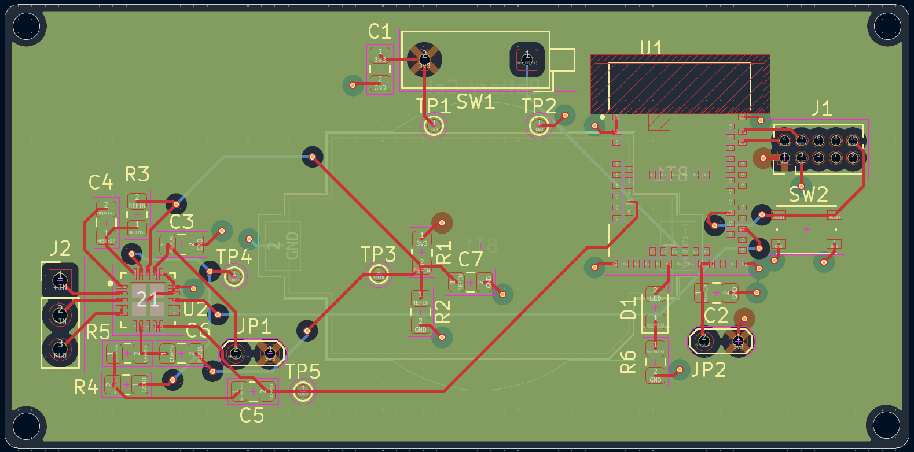
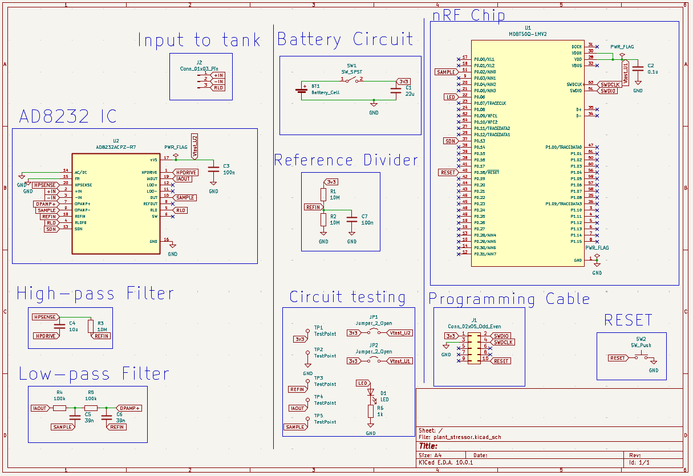
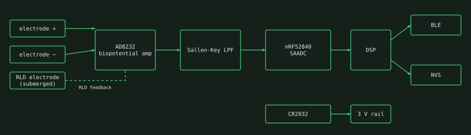
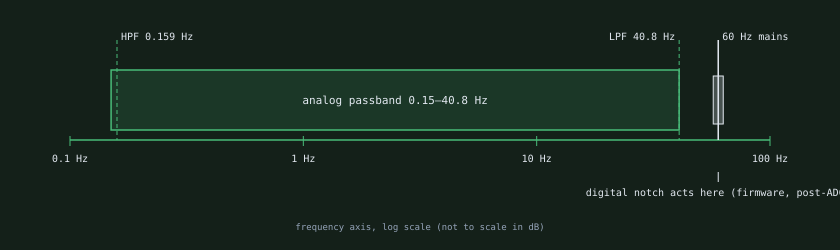
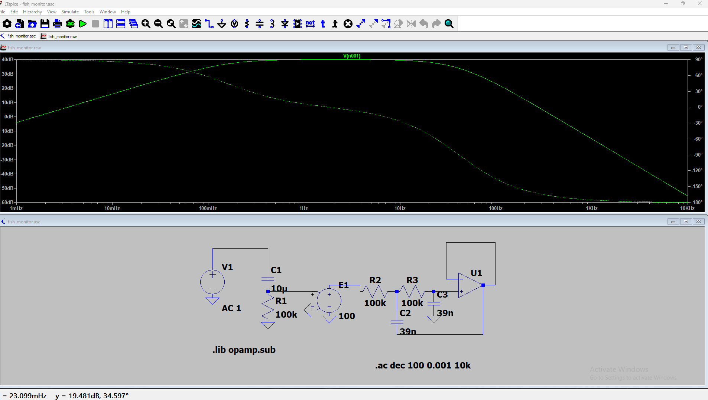
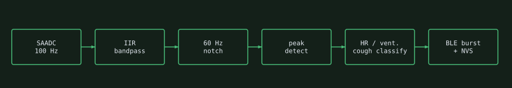
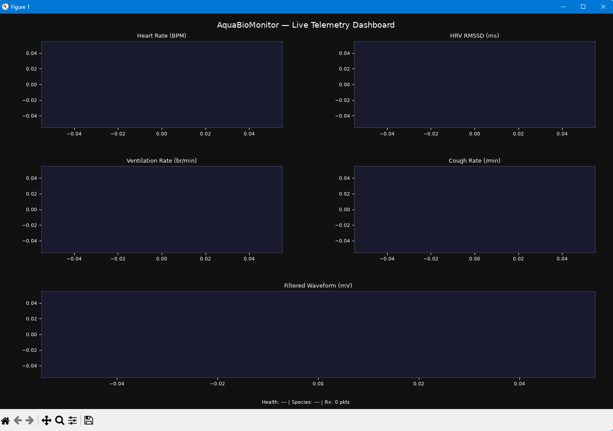
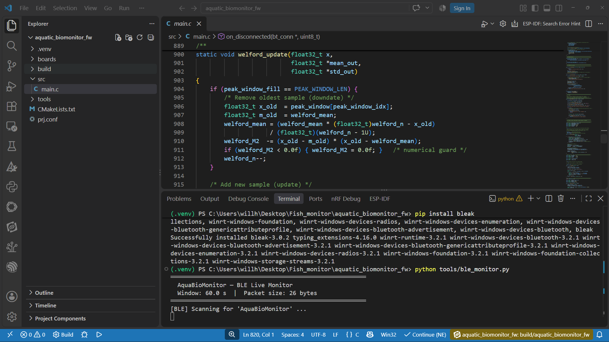
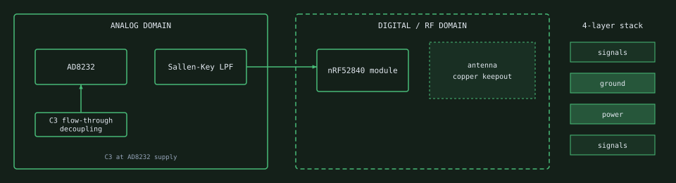

Wireless ECG and ventilation sensing through tank water. A custom 4-layer mixed-signal PCB designed to monitor fish cardiac and ventilation rates non-invasively through water conductivity, with wireless telemetry over Bluetooth 5. No contact with the subject is required by design.
I designed a coin-cell-powered wireless bio-sensing platform for non-invasive aquatic biometric monitoring. With electrodes submerged in the tank water, the system is designed to measure biological action potentials through water conductivity alone and pick up fish ECG and gill-ventilation rates without contact with the animal — no implants or restraints.
Originally conceived as a plant action-potential recorder, the architecture was pivoted via hardware-software co-design so the same board can serve as an aquatic monitor, with the species-specific changes made in firmware. The analog front-end stays wide; all species-specific signal extraction is handled in firmware.




Lab aquatic environments are electrically hostile. 60 Hz mains hum couples strongly into tank water, electrode–water interfaces generate slow DC polarization offsets that saturate amplifiers, and different fish species produce biometric signals across a wide, variable frequency range.
A conventional approach — rigid analog brick-wall filters tuned to a single species — fails on all three counts: it can't adapt to different species without a hardware re-spin, it doesn't handle variable lab noise floors, and tight filter poles near the signal band risk introducing phase distortion into the very signals you're trying to measure.
Design decision: Use a deliberately wide analog passband to capture all biological signals while enforcing two hard limits against ADC saturation. Delegate all species-specific and noise-specific filtering to software DSP running on the nRF52840's hardware FPU.
The passband runs from 0.15 Hz to 40.8 Hz — wide enough to cover every known aquatic vertebrate biometric in the biological action-potential range, tight enough to block the two dominant noise sources before the ADC ever sees them.


The third electrode is not a passive ground reference. The AD8232's Right Leg Drive (RLD) output actively injects a signal that is the inverted, amplified sum of the common-mode noise seen at both differential inputs. Submerging this electrode in the tank water is expected to create a feedback loop that reduces 60 Hz EMI at the source — a fundamentally superior strategy to filtering it downstream, especially in an unshielded open-water environment.
The wideband strategy intentionally passes some residual noise to the ADC. The firmware running on the nRF52840's ARM Cortex-M4F is responsible for all signal extraction.
The nRF52840's hardware floating-point unit is designed to run IIR and FIR digital filter routines in real time at the ADC sample rate. Two filter types are deployed:
Hardware-software co-design pivot: This firmware DSP architecture is designed to allow the platform — originally designed for plant electrophysiology — to be repurposed for aquatic bio-telemetry without any hardware modification.
The firmware is written for Zephyr on the nRF52840 and has not yet run on hardware, since the board is not fabricated.

The firmware (v3.0.0) is split into three preemptive Zephyr threads connected by message queues, so sampling timing never depends on DSP or BLE work. It builds against the nRF Connect SDK; it has not yet run on the custom board.
| Thread | Stack | Priority | Job |
|---|---|---|---|
| adc_thread | 1024 B | 2 | Wakes on a semaphore from a 10 ms k_timer, reads the SAADC, posts to raw_sample_queue |
| dsp_thread | 3072 B | 3 | Notch + bandpass, peak detection, BPM / HRV / ventilation / cough, health classification, posts to telem_queue |
| ble_thread | 2048 B | 5 | Packs the 26-byte telemetry packet and sends a GATT notification |
k_timer whose expiry gives a semaphore, so the ISR stays short and the ADC thread does the workk_msgq between stages: 8 raw samples deep, 4 telemetry packets deep; puts use K_NO_WAIT so a slow stage drops data instead of blocking the samplerk_mutex guards the active species profile and bandpass coefficients, so a species change over BLE can re-initialize the filter safely while the DSP thread runs

tools/ble_monitor.py (bleak) scanning for the "AquaBioMonitor" peripheral, 26-byte packets, 60 s window. No board connected in this capture.The 4-layer stackup is designed with dedicated power and ground planes to support domain separation between the noise-sensitive analog measurement path and the switching digital/RF domain. A strict copper keepout zone is enforced on all four layers directly beneath the MDBT50Q-1MV2's integrated 2.4 GHz ceramic antenna. Removing ground copper from the antenna footprint is intended to keep the ground plane from loading the antenna, to maximize expected Bluetooth range in the lab.

High-frequency switching transients from the nRF52840's internal DC-DC converter are intended to be blocked from coupling into the analog measurement path via flow-through power decoupling on the AD8232 supply pin (C3, 100 nF placed as close to the IC pin as the layout permits). The goal is to keep digital switching noise from appearing as correlated interference in the biopotential measurement.
Several SMD passive footprints in the design placed vias within the pad copper. Without mitigation, solder wicks through the via during reflow, causing insufficient joints and potential opens. Each instance was identified in layout review and resolved by offsetting or tenting the via before Gerber generation.
The BOM, CPL, and POS files were optimized for JLCPCB's automated SMT pick-and-place service, with all standard passives and commodity ICs assigned to the JLCPCB parts library. The AD8232 and MDBT50Q-1MV2 — both with non-standard footprints — are flagged for manual lab soldering after automated reflow, minimizing per-unit cost while maintaining assembly quality on the critical components.
| Layer | Function | Thickness |
|---|---|---|
| L1 | Signals | TODO |
| L2 | Ground | TODO |
| L3 | Power | TODO |
| L4 | Signals | TODO |